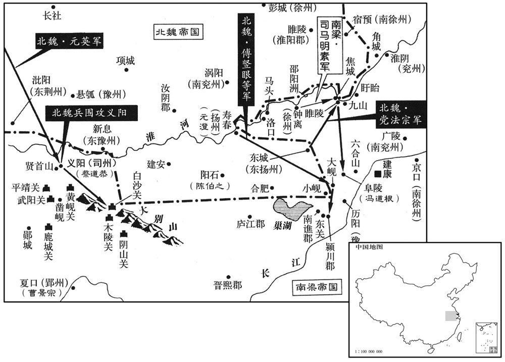

公元503年资治通鉴：本年记事、原文与白话对照
按原书编年位置阅读；追叙和史论不等于本年发生的事件。白话采用所据译本，缺译不以生成译文补齐。
卷145 · 本年记事
公元503年 · 梁高祖武皇帝天监二年
二年〔（癸未、五○三）〕
本年事件索引（现代整理）
- 梁任沈约为左仆射、范云为右仆射，王亮被废为庶人
- 北魏宣武帝亲耕籍田
- 杨椿等讨伐北魏梁州氐人杨会
- 成都粮尽，刘季连向梁军投降
- 梁武帝赦免刘季连为庶人
- 北魏皇后亲蚕于北郊
- 北魏攻取梁朝阴山、白笹二戍
- 萧宝寅伏阙请兵伐梁，获任齐王并统兵
- 蔡法度进呈梁律、令、科并颁行
- 梁霄城侯范云去世
- 范云去世后徐勉、周舍参掌梁朝政务
- 梁武帝禁止郡县向皇帝、太子进献财物
- 杨椿大破叛乱氐人
- 北魏封元悦为汝南王
- 任城王元澄请魏调兵防守淮南
- 谢朏被征为司徒，辞疾后获准归家
- 梁任王莹为尚书右仆射
- 北魏平阳公元丕去世
- 北魏废盐池禁令后又将盐利收归官府
- 孝文帝任元勰为太师，元勰固辞后受命
- 北魏遣元英督军征讨义阳
- 元澄分兵攻取梁朝东关、大岘等城戍
- 冯道根坚守阜陵击退北魏军
- 北魏武兴王杨集始去世，子绍先继位
- 沈约因母亲去世离职守丧
- 源怀巡行北境赈济百姓并整顿六镇官政
- 吴子阳与元英战于白沙，兵败
- 北魏任李崇统军讨伐东荆州蛮人
- 吉翂击鼓请代父受刑，梁武帝赦其父
- 吉翂拒绝以代父之举求取孝名
- 北魏纳高偃之女为贵嫔
- 赵修恃宠骄横，获罪被徙敦煌途中身亡

本年形势与背景参考图
春，正月，乙卯，以尚书仆射沈约为左仆射，吏部尚书范云为右仆射，尚书令王亮为左光禄大夫。丙辰，亮坐正旦诈疾不登殿，削爵，废为庶人。
春季，正月，乙卯（初二），梁武帝任命尚书仆射沈约为左仆射，吏部尚书范云为右仆射，尚书令王亮为左光禄大夫。丙辰（初三），王亮因在正月初一假称有病不登殿朝贺而获罪，被削去爵位，黜为平民。
乙亥，魏主耕籍田。
乙亥（二十二日），北魏宣武帝到籍田举行亲耕仪式。
魏梁州氐杨会叛，行梁州事杨椿等讨之。〔齐东昏永元二年书魏梁州刺史杨椿招降氐王杨集始，今乃为行梁州事，当考。〕
北魏梁州氐人杨会反叛，行梁州事杨椿等人讨伐他。
成都城中食尽，升米三千，人相食。刘季连食粥累月，计无所出。上遣主书赵景悦宣诏受季连降，〔降，户江翻；下同。〕季连肉怛请罪。邓元起迁季连于城外，俄而造焉，待之以礼。〔造，七到翻。〕季连谢曰：「早知如此，岂有前日之事！」〔盖言前日所以阻兵拒命，实为朱道琛构间也。〕琕城亦降。元起诛李奉伯等，送季连诣建康。初，元起在道，惧事不集，无以为赏，士之至者皆许以辟命，于是受别驾、治中檄者将二千人。
成都城中的粮食吃光了，一升米价格暴涨到三千钱，人们开始互相残食。刘季连连着几个月喝粥，没有一点办法。武帝派遣主书赵景悦宣谕诏令，可以接受刘季连投降。刘季连只好投降，他光着上身来请罪。邓元起把刘季连移到城外，很快又去看他，对他以礼相待。刘季连对邓元起谢罪说：“早知道这样的话，岂有前头的事情呢？”琕城出投降了。邓元起杀了李奉伯等人，送刘委连去建康。开初，邓元起在途中，担心事情不能成功，没有什么可以奖赏，因此凡是来投附的士人都许诺成功之后给封官，于是接受被征召为别驾、治中的简书的人将近有两千人。
季连至建康，入东掖门，数步一稽颡，以至上前。〔稽，音启。〕上笑曰：「卿欲慕刘备，而曾不及公孙述，〔谓公孙述不肯降汉也。〕岂无卧龙之臣邪！」〔卧龙，谓诸葛孔明。〕赦为庶人。
刘季连到了建康，进入东掖门，他每走几步就跪在地上磕头一次，一直到了武帝面前，梁武帝笑着对他说：“你想追慕刘备，但是连公孙述都比不上，岂不是因为没有象诸葛孔明这样的臣子吗？”刘季连被赦为平民。
三月，己巳，魏皇后蚕于北郊。
三月，己巳（十七日），北魏皇后在北郊举行养蚕仪式。
庚辰，魏扬州刺史任城王澄遣长风城〔【章：十二行本「城」作「戍」；乙十一行本同；孔本同；退斋校同；熊校同。】〕主奇道显入寇，〔姓谱，奇姓，伯奇之后。〕取阴山、白笹二戍。〔据水经注，阴山关在弋阳县西南；唐志，黄州麻城县东北有阴山关。〕
庚辰（二十八日），北魏扬州刺史任城王元澄派遣长风城城主奇道显入侵梁朝，占取了阴山、白藁两个城堡。
萧宝寅伏于魏阙之下，〔此魏朝之阙门也。阙即古之象魏。〕请兵伐梁，虽暴风大雨，终不蹔移；会陈伯之降魏，亦请兵自效。魏主乃引八坐、门下入定议。〔八坐，谓令、仆及诸曹尚书。门下，谓侍中散骑常侍等官。蹔，与暂同。降，户江翻。坐，徂卧翻。〕夏，四月，癸未朔，以宝寅为都督东扬等三州诸军事、镇东将军、扬州刺史、丹杨公、齐王，礼赐甚厚，配兵一万，令屯东城；〔此盖汉、晋之东城县地，以其地在寿阳之东，故置东扬州。〕以伯之为都督淮南诸军事、平南将军、江州刺史，屯阳石，〔即羊石城也，在庐江西北，霍丘东南。〕俟秋冬大举。宝寅明当拜命，〔明，谓明旦也。〕自夜恸哭至晨。魏人又听宝寅募四方壮勇，得数千人，以颜文智、华文荣等六人皆为将军、军主。〔颜文智将宝寅投华文荣，文荣等将宝寅投北。华，户花翻。〕宝寅志性雅重，过期犹绝酒肉，〔礼，为兄弟服期丧。〕惨形悴色，蔬食粗衣，未尝嬉笑。〔悴，秦醉翻。〕
萧宝寅跪伏在北魏朝廷阙门之下，请求出兵讨伐梁朝，虽然来了暴风大雨，他也不暂时去避躲一下。恰在这时，陈伯之投降了北魏，也请兵伐梁，愿为北魏效力。于是，北魏宣武帝就召集令、仆和诸曹尚书等八坐，以及侍中、散骑常侍等门下等大臣们进去议定其事。夏季，四月，癸未朔（初一），北魏委任萧宝寅为都督东扬州等三州诸军事、镇东将军、扬州刺史、丹杨公、齐王，对他的赏赐十分丰厚，并且配兵一万，令他驻守东城。又委任陈伯之为都督淮南诸军事、平南将军、江州刺史，令他驻守阳石，等待到了秋冬时间就大举讨伐梁朝。萧宝寅在第二天早晨就要接受北魏的拜官封爵，从夜里一直恸哭到次日早晨。北魏人又允许萧宝寅招募四方的勇壮之士，得到数千人，颜文智和华文荣等六人都成了将军，军主。萧宝寅意志庄重性情文雅，虽然过了为东昏侯服丧一年的期限，但是犹拒食酒肉。他形容憔悴，饮食粗劣，身着粗布之衣，从来不嬉笑。
癸卯，蔡法度上梁律二十卷，〔上，时掌翻。〕令三十卷，科四十卷。诏班行之。
癸卯（二十一日），梁朝蔡法度向朝廷献上《梁律》二十卷、《令》三十卷、《科》四十卷，武帝诏令颁布实行。
五月，丁巳，霄城文侯范云卒。〔霄城县侯也。五代志：沔阳郡竟陵县，旧曰霄城。卒，子恤翻；下同。〕
五月丁巳（初六），霄城文侯范云去世。
云尽心事上，知无不为，临繁处剧，〔处，昌吕翻。〕精力过人。及卒，众谓沈约宜当枢管，〔枢管，谓管枢机也。今人犹谓枢密院为枢管。以此观之，沈约位虽在范云之右，而亲任不及云远矣。〕上以约轻易，〔易，以豉翻。〕不如尚书左丞徐勉，乃以勉及右卫将军〔【章：十二行本「军」下有「汝南」二字；乙十一行本同；孔本同；退斋校同。】〕周舍同参国政。舍雅量不及勉，而清简过之，两人俱称贤相，常留省内，罕得休下。〔休下，谓休偃下直也。〕勉或时还宅，群犬惊吠；每有表奏，辄焚其笹。舍豫机密二十余年，未尝离左右，〔离，力智翻。〕国史、诏诰、仪体、法律、军旅谋谟皆掌之，与人言谑，终日不绝，〔谑，迄却翻，戏言也。〕而竟不漏泄机事，众尤服之。〔史究言二人终身大概。〕
范云全心全意地侍奉武帝，凡是所知道的事情没有不办理的，总处于繁忙而紧张之中，而精力过人。范云去世之后，众人认为应当由沈约来掌管朝廷枢要，但是梁武帝却认为沈约办事轻率而不慎重，不如尚书左丞徐勉，于是就让崐徐勉和右卫将军周舍一同参理国政。周舍的气量比不上徐勉，但是在清简方面却超过徐勉，两人都被称为是贤相，经常留在朝中理事，很少有下朝休息的时间。徐勉有时回自已的宅第，院子中的狗见了他惊叫狂吠；每次起草上表奏启，抄毕后马上就把初稿烧掉。周舍参与朝廷机密大事二十多年，从来没有离开武帝身边，凡国史、诏诰、仪礼、法律、军旅筹谋策划等，他都亲自掌管，同别人言谈逗笑，终日不停，但是竟然不会泄露一点机密，众人尤其佩服他。
壬申，断诸郡县献奉二宫，惟诸州及会稽许贡任土，若非地产，亦不得贡。〔断，音短；下频断同。二宫，上宫及东宫也。会稽，东土大郡也，故使之同于诸州。〕
壬申（二十一日），梁武帝敕令停止各郡县为上宫和东宫贡献物品，只准许各州以及会稽郡可以根据本土的具体情况制定贡奉物品种类，但是如果不是本地所产的，也不得上贡。
甲戌，魏杨椿等大破叛氐，斩首数千级。〔是年春，氐杨会叛。〕
甲戌（二十三日），北魏杨椿等人大败叛乱的氐族部落，斩首数千人。
六月，壬午朔，魏立皇弟悦为汝南王。
六月，壬午朔（初一），北魏封立宣武帝的弟弟元悦为汝南王。
魏扬州刺史任城王澄表称「萧衍频断东关，〔断，音短。〕欲令漅湖泛溢以灌淮南诸戍。吴、楚便水，且灌且掠，淮南之地将非国有。寿阳去江五百余里，众庶惶惶，并惧水害。脱乘民之愿，攻敌之虚，豫勒诸州，纂集士马，有〔【章：十二行本「有」作「首」；乙十一行本同；孔本同；退斋校同。】〕秋大集，应机经略，虽混壹不能必果，江西自是无虞矣。」丙戌，魏发冀、定、瀛、相、并、济六州二万人，马一千五百匹，〔相，息亮翻。济，子礼翻。〕令仲秋之中异会淮南，并寿阳先兵三万，〔先兵，先屯寿阳之兵。〕委澄经略；萧宝寅、陈伯之皆受澄节度。
北魏扬州刺史、任城王元澄上表讲道：“萧衍频频地阻断东关，想使巢湖泛滥，以便淹灌淮河南边的各个城堡。吴、楚之地有水域之便，他们可以一边淹灌，一边掠夺，所以淮河南边的地盘将非我国所有了。寿阳离长江五百多里，民众惶惶不安，都害怕水害到来，如果乘民众担心梁朝水淹其地的机会，攻打敌人于不备，预先勒令各州，准备兵士和战马，到秋天汇齐集中，根据情况布署决定行动方案，这样虽然统一天下不一定必能成功，但是长江之西却从此没有什么可忧虑的了。”丙戌（初五），北魏调发冀、定、瀛、相、并、济六个州的两万人，一千五百匹马，令于仲秋之中期全部在淮南会合，加上寿阳原有的三万兵力，一并委于元澄指挥调遣，萧宝寅和陈伯之也受元澄指挥。
谢朏轻舟出诣阙，〔朏，敷尾翻。〕诏以为侍中、司徒、尚书令。朏辞脚疾不堪拜谒，角巾自舆诣云龙门谢。诏见于华林园，〔见，贤遍翻。〕乘小车就席。明旦，上幸朏宅，〔谢朏仕宋及齐，有宅在建康。〕宴语尽欢。朏固陈本志，不许；因请自还东迎母，许之。临发，上复临幸，〔复，扶又翻。〕赋诗饯别；王人送迎，相望于道。〔凡将上命者皆谓之王人。〕及还，诏起府于旧宅，礼遇优异。朏素惮烦，不省职事，众颇失望。〔谢朏之于樊英又不及远甚。省，悉景翻。〕
谢朏乘坐轻舟出门来到建康，梁武帝诏令他为侍中、司徒、尚书令。谢朏推辞说有脚疾，不堪于拜谒之事，头戴方巾，自己驾车，来到云龙门谢恩。武帝在华林园召见谢朏，他乘着小车去赴席。次日早晨，武帝临幸谢朏在建康的宅第，两人边饮边谈，非常欢快。谢朏再三陈述自己的心愿，不想出仕，但武帝不答应，谢朏无奈，只好请求自己回东面去迎接母亲前来，然后再就任，武帝同意了。谢朏临出发之前，武帝再次临幸，为他赋诗饯别。谢朏离京东还时，送行和迎接的使者络绎不绝，后一拨可以看到前一拨。谢朏回到建康之后，武帝诏令在他的旧宅起造新府，对他的各种礼遇就更优异于他人了。谢朏向来害怕麻烦，不过问职务内之事，因此众人对他颇为失望。
甲午，以中书监不莹为尚书右仆射。
甲午（十三日），任命中书监王莹为尚书右仆射。
秋，七月，乙卯，魏平阳平公丕卒。
秋季，七月，乙卯（初五），北魏平阳公元丕去世。
魏既罢盐池之禁，〔魏主践阼之初，中尉甄琛表弛盐禁，彭城王勰与邢峦以为不可，魏主诏从琛请。通鉴目录已提其要，此事合载于一百四十三卷齐东昏永元二年，而通鉴正文逸其事，错简置于百四十六卷天监五年。〕而其利智为富强所专。庚午，复收盐池利入公。〔复，扶又翻。〕
北魏撤销了关于盐池的禁令之后，盐池的利益都被富豪们所夺去。庚午（二十日），北魏重新宣布收盐池之利入公。
辛未，魏以彭城王勰为太师，〔勰，音协。〕勰固辞。魏主赐诏敦谕，又为家人书，祈请恳至；〔为家人书，用家人叔侄之礼也。〕勰不得已，受命。
辛未（二十一日），北魏任命彭城王元勰为太师，元勰坚决推辞而不崐接受。北魏宣武帝赐给元勰诏书，谆谆劝谕，以小辈身分给他写了家信，一再祈请，恳切至备，元勰不得已，只好受命。
八月，庚子，魏以镇南将军元英都督征义阳诸军事。司州刺史蔡道闻魏军将至，遣骁骑将军杨由帅城外居民三千余家保贤首山，为三栅。〔骁，坚尧翻。骑，奇寄翻。帅，读曰率。〕冬，十月，元英勒诸军围贤首栅，栅民任马驹斩由降魏。〔任，音壬。降，户江翻。〕
八月庚子（二十日），北魏委任镇南将军元英都督征义阳诸军事。梁朝司州刺史蔡道恭闻知北魏军队将要到了，派遣骁骑将军杨由率领城外的居民三千多家去保卫贤首山，杨由建立了三重栅垒以作防守。冬季，十月，元英统率各部兵众围住了贤首栅，栅内的民众任马驹斩了杨由，投降北魏。
任城王澄命统军党法宗、傅竖眼、太原王神念等分兵寇东关、大岘、淮陵、九山，〔「淮陵」，恐当作「睢陵」。齐置徐州于锺离，又侨置济阴郡睢陵县于郡界。五代志：锺离郡化明县，旧曰睢陵，置齐阴郡。化明，唐濠州之招义县也。或曰：宋志，南徐州领淮陵郡，睢陵、淮陵皆属汉徐部，是时既置徐州于锺离，则亦置淮陵于锺离界，未可知也。魏收志，陈留、锺离二郡有朝歌县，县有九山城、黄溪水。按水经注，黄水出黄武山，东北流，径南光城、弋阳等郡。今按今招信军盱眙县西南一十五里有三城，又西十五里至淮陵，城临池河，池河过淮陵城西而北，入于淮，谓之池河口。九山店在淮北，南直淮陵。九山店之东则陷堈湖，南则马城。淮流至此，谓之九山湾。其东则凤凰州，在淮水中，约长十里。今土人亦呼九山湾为狮子渡，北兵渡淮之津要也。岘，户典翻。〕高祖珍将三千骑为游军，澄以大军继其后。竖眼，灵越之子也。〔傅灵越从薛安都起兵，攻张永以应义嘉，兵溃而死。竖，而主翻。〕魏人拔关要，颍川、大岘三城，〔魏收志，霍州有北颍川郡，领颍川等三县。水经注：梁立霍州，治灊县天柱山。〕白塔、牵城、清溪皆溃。徐州刺史司马明素将兵三千救九山，〔将，即亮翻；下同。〕徐州长史潘伯邻救淮陵。宁朔将军王燮保焦城，党法宗等进拔焦城，破淮陵，十一月，壬午，擒明素，斩伯邻。
任城王元澄命令统军党法宗、傅竖眼、太原人王神念等人分别率领兵众去入侵东关、大岘、淮陵、九山，高祖珍率领三千骑兵为游动兵力，元澄统领大军继后而进。傅竖眼是傅灵越的儿子。北魏军队攻破了关要、颍川、大岘三城，而白塔、牵城、清溪也都溃败了。梁朝徐州刺史司马明素率兵三千去援救九山，徐州长史潘伯邻去援救淮陵，宁朔将军王燮去保焦城。党法宗等人去进攻并打下焦城，攻破淮陵。十一月壬午（疑误），北魏军队擒获了司马明素，斩了潘伯邻。
先是，南梁太守冯道根戍阜陵，〔冯道根传，以南梁太守领阜陵戍。先，悉荐翻。〕初到，修城隍，远斥候，如敌将至，众颇笑之。道根曰：「怯防勇战，此之谓也。」〔其周防若怯，而临战则勇。〕城未毕，党法宗等众二万奄至城下，众皆失色。道根命大开门，缓服登城，选精锐二百人出与魏兵战，破之。魏人见其意思闲暇，〔思，相吏翻。〕战又不利，遂引去。道根将百骑击高祖珍，破之。〔骑，奇寄翻。〕魏诸军粮运绝，引退。以道根为豫州刺史。〔此时梁豫州治晋熙，道根盖犹戍阜陵，特带刺史耳。〕
早先之时，梁朝南梁太守冯道根戍守阜陵，刚到之时，他就修筑城壕，派人四出侦察放哨，就好象敌人将要到了一样，众人多讥笑他。冯道根却说道：“防御若怯，临战则勇，说的正是这个呀。”城防还没有修筑完毕，党法宗等人就率兵两万突然来到城下，众人全都大惊失色。冯道根命令大开城门，穿着宽绰的便服登上城门，并挑选二百名精锐兵士出城与北魏兵交战，打败了敌手。北魏人见冯道根神态悠闲，初次交锋又不顺利，于是就撤走了。冯道根率领百名骑兵去袭击高祖珍，破敌获胜。北魏的各路军队粮食运送阻断，只好撤军而退。梁武帝任命冯道根为豫州刺史。
武兴安王杨集始卒。己未，魏立其世子绍先为武兴王；绍先幼，国事决于二叔父集起、集义。
北魏武兴安王杨集始去世。己未（十一日），北魏封立杨集始的长子杨绍先为武兴王。杨绍先年龄幼小，所以封国中的事情都决定于他的两个叔父杨集起、杨集义。
乙亥，尚书左仆射沈约以母忧去职。
乙亥（二十七日），梁朝尚书左仆射沈约因为母亲去世而离职。
魏既迁洛阳，北边荒远，因以饥馑，百姓困弊。魏主加尚书左仆射源怀侍中、行台，〔魏道武置行台之官于邺中山，今置于北边。杜佑曰：魏末司马师讨诸葛诞，散骑常侍裴秀、尚书仆射陈泰、黄门侍郎锺会等以行台从。北齐行台兼统民事自辛术始，隋谓之行台省。〕使持节巡行北边六镇、恒‧燕‧朔三州，〔六镇，列置于三州塞下。使，疏吏翻；下同。行，下孟翻。恒，户登翻。燕，因肩翻。〕赈给贫乏，考论殿最，〔既使之赈恤贫民，又使之按察官吏。殿，丁练翻。〕事之得失皆先决后闻。怀通济有无，饥民赖之。沃野镇将于祚，〔沃野，汉朔方郡之属县也。魏平赫连，与统万同置镇，不在六镇之数。将，即亮翻；下同。〕皇后之世父，〔世父，伯父承世嫡者。〕与怀通婚。时于劲方用事，势倾朝野，〔朝，直遥翻。〕祚颇有受纳。怀将入镇，祚郊迎道左，怀不与语，即劾奏免官。〔劾，户概翻，又户得翻；下同。〕怀朔镇将元尼须与旧交，贪秽狼籍，〔苏鹗演义曰：狼籍者，物杂乱之貌；狼所卧籍之草皆秽乱。〕置酒请怀，谓怀曰：「命之长短，系卿之口，岂可不相宽贷！」怀曰：「今日源怀与故人饮酒之坐，〔坐，徂卧翻。〕非鞫狱之所也。明日，公庭始为使者检镇将罪状之处耳。」尼须挥泪无以对，竟按劾抵罪。怀又奏：「边镇事少而置官猥多，〔少，诗沼翻。〕沃野一镇自将以下八百余人，〔将，谓镇将也。将，即亮翻。〕请一切五分损二。」魏主从之。
北魏迁都洛阳之后，北边逐渐荒废，因此而出现饥荒，老百姓生活困顿破败。北魏宣武帝加任尚书左仆射源怀侍中、行台，让他持符节巡视北方六镇以及恒、燕、朔三个州，救济贫困之民，考核官吏，事情之得失都由他先做处理，然后再上报。源怀到达之后，普济民众，饥民们对他非常感激信赖。沃野镇的守将于祚是皇后的伯父，与源怀是亲家。当时于劲刚当权不久，势倾朝崐野，而于祚颇有受贿行为。源怀快到活野镇时，于祚特意到郊外道左去迎接，但是源怀不与于祚搭话，当即就检举弹劾了他的罪状，免去了他的官职。怀朔镇的守将元尼须与源怀有旧交，他十分贪秽，声名狼藉，置办了酒席宴请源怀，对源怀说：“我命的长短，完全取决于您的一句话，既为旧交，岂能不加以宽容呢？”源怀回答：“今天是源怀与过去的老相识坐在一起饮酒，这里也不是审讯犯人的地方。明天，公庭才是我检举揭发你的罪状的地方呢。”元尼须听源怀这么说，挥泪不已，无言以对。最后，源怀查证了所揭发的罪行，处理了元尼须。源怀又上奏朝廷：“边镇事情不多而设置的官职过多，比如沃野一镇从镇将以下就有八百多人，请减去五分之二。”宣武帝听从了这一建议。
乙酉，将军吴子阳与魏元英战于白沙，子阳败绩。〔白沙在齐安郡界。魏收志，有沙州，治白沙关城，注云梁置。唐志，黄州黄陂县有白沙关。〕
乙酉（疑误），梁朝将军吴子阳与北魏元英交战于白沙，吴子阳败北。
魏东荆州蛮樊素安作乱，乙酉，以左卫将军李崇为镇南将军、都督征蛮诸军事，将步骑讨之。〔将，即亮翻。骑，奇寄翻。〕
北魏东荆州蛮人樊素安作乱，乙酉（疑误），北魏委任左卫将军李崇为镇南将军、都督征蛮诸军事，率领步、骑兵去讨伐樊素安。
冯翊吉翂父为原乡令，〔翂，抚文翻。汉云帝中平二年分故鄣立原乡县，属吴兴郡。〕为奸吏所诬，逮诣廷尉，罪当死。翂年十五，檛登闻鼓，乞代父命。〔檛，则瓜翻。〕上以其幼，疑人教之，使廷尉卿蔡法度严君诱胁，取其款实。〔诱者，开之以生路；胁者，威之以纆索杻械，示将拷讯之。款，诚也。诱，音酉。〕法度盛陈拷讯之具，诘翂曰：「尔求代父，敕已相许，审能死不？〔所谓胁之也。拷，音考。诘，去吉翻。不，读曰否。〕且尔童騃，若为人所教，亦听悔异。」〔騃，五骇翻。所谓诱之也。悔异，犹律文所谓鲼异。〕翂曰：「囚虽愚幼，岂不知死之可惮！顾不忍见父极刑，故求代之。此非详故，柰何受人教邪！明诏听代，不异登仙，岂有回贰！」〔反前说为回，异前说为贰。〕法度乃更和颜诱之曰：「主上知尊侯无罪，行当得释，观君足为佳童，今若转辞，幸可父子同济。」翂曰：「父挂深劾，必正刑书；囚瞑目引领，唯听大戮，〔劾，户概翻，又户得翻。瞑，莫定翻。〕无言复对。」时翂备加杻械，法度愍之，命更着小者，〔复，扶又翻。杻，女九翻。更，工衡翻。着，陟略翻。〕翂不听，曰：「死罪之囚，唯宜益械，岂可减乎！」竟不脱。法度具以闻，上乃宥其父罪。
梁朝冯翊人吉翂的父亲为原乡县县令，被奸吏所诬陷，逮捕押送到廷尉，罪当处死。吉翂时年十五岁，他击响了悬挂在朝堂外的登闻鼓，乞求代父亲一死。武帝见他所龄幼小，怀疑是别人教他这么干的，就让廷尉卿蔡法度对他严加诱胁，让他说出实情来。蔡法度把各种拷讯刑具都摆出来，诘问吉翂：“你乞求为父抵命，圣旨已经准许了，现在就是看你是否真的愿意去死？况且你只不过是一个儿童，如果是别人教你这样做的，那么你要反悔也可以。”吉翂回答：“囚犯我虽然愚鲁年幼，但是岂能不知道死之可怕呢？完全是出于不忍心看父亲遭受极刑，所以乞求代他一死。这不是小事，怎么是受他人的教唆呢！圣旨准许我代父而死，真是不异于登仙，岂有反悔之说呢？”蔡法度于是更加和颜悦色地诱导吉翂说：“皇上知道令尊没有罪，很快就会释放，看你实在是一个好孩子，现在你如果能改变一下所说的话，你们父子就可以一同活命。”吉翂又回答：“父亲的案子非常严重，必定以法论处。囚犯我唯有闭目伸头，听任一斩，再没有什么要说的了。”当时，吉翂被加上了手铐脚镣，蔡法度怜悯他，命令给他另换成轻一些的刑具，但是吉翂却不让换，说：“我是死罪犯人，只应该加重刑具，岂可以减轻呢？”竞然不肯脱去手铐与脚镣。蔡法度把这一切情况上奏武帝，于是武帝就宽恕了吉翂父亲的罪过。
丹杨力王志求其在廷尉事，并问乡里，欲于岁首举充纯孝。〔魏、晋以来举士皆由州乡，故问其乡里。〕翂曰：「异哉王尹，何量翂之薄乎！父辱子死，道固当然；若翂当此举乃是因父取名，何辱如之！」固拒而止。〔量，音良。翂之拒王志是也；梁武帝知翂之孝节而不能叙用以厉流俗，非也。〕
丹杨尹王志了解了吉翂在廷尉审问中的事情经过，并且询问他的乡里，准备在下年初举荐吉翂为纯孝之士。吉翂对王志说：“奇怪呀，王尹！为什么要把我吉翂看得如此之薄呢？父亲受辱，儿子代死，理当如此。如果我吉翂接受这一举荐，就是凭借自己的父亲而博取名声，还有什么耻辱可以比得上这一耻辱呢？”因此，坚决加以拒绝，王志只好作罢。
魏主纳高肇兄偃之女为贵嫔。〔嫔，毗宾翻。〕
北魏宣武帝纳高肇的哥哥高偃的女儿为贵嫔。
魏散骑常侍赵修，寒贱暴贵，恃宠骄恣，陵轹王公，为众所疾。〔散，悉亶翻。骑，奇寄翻。轹，朗击翻。〕魏主为修治第舍，拟于诸王，〔为，于伪翻。治，直之翻。〕邻居献地者或超补大郡。修请告归葬其父，凡财役所须，并从官给。修在道淫纵，〔修自洛归赵郡，在道淫纵。〕左右乘其出外，颇发其罪恶；及还，旧宠小衰。高肇密构成其罪，侍中、领御史中尉甄琛、黄门郎李凭、廷尉卿阳平王显，素皆谄附于修，至是惧相连及，〔惧以党附连坐及祸。甄，之人翻。琛，丑林翻。〕争助肇攻之。帝命尚书元绍检讯，下诏暴其奸恶，免死，鞭一百，徙敦煌为兵。〔敦，徒门翻。〕而修愚疏，初不之知，方在领军于劲第樗蒲，羽林数人称诏呼之，送诣领军府。甄琛、王显监罚，先具问事有力者五人，迭鞭之，〔监，工衔翻。问事，行杖者也。〕欲令必死。修素肥壮，堪忍楚毒，密加鞭至三百不死。即召驿马，促之上道，出城不自胜，〔上，时掌翻。胜，音升。〕举缚置鞍中，〔举，擎也。修困极不能自胜乘骑，两人对举而置之马上，缚着鞍中。〕急驱之，行八十里，乃死。帝闻之，责元绍不重闻，〔重，直用翻。闻，奏也。〕绍曰：「修之佞幸，为国深蠹，臣不因衅除之，〔衅，隙也。衅，许觐翻。〕恐陛下受万世之谤。」帝以其言正，不罪也。绍出，广平王怀拜之曰：「翁之直过于汲黯。」绍曰：「但恨戮之稍晚，以为愧耳。」绍，素之孙也。〔常山王素见一百二十二卷宋文帝元嘉十一年。广平王怀，孝文之子，以族属长幼之次，呼绍为翁。〕明日，甄琛、李凭以修党皆坐免官，左右与修连坐死黜者二十余人。散骑常侍高聪与素亲狎，而又以宗人谄事高肇，故独得免。
北魏散骑常侍赵脩，出身微贱而突然显贵，恃宠骄恣，欺压王公，被众人所忌恨。宣武帝为赵脩建造宅第，规模与诸王的一样。邻居们向赵脩献出土地，有的竟然被破格而补到大郡去做郡守。赵脩请假回去埋葬父亲，凡是所用财物劳役，全部由官家提供。赵脩曾在路上纵淫，身边的人乘他外出，向朝廷告发了他的罪恶，因此到他回京城之后，在皇帝那里得到的宠幸就比过去有所减少。高肇秘密地收集、上告了赵脩的罪状，侍中、领御史中尉甄深、黄门郎李凭、廷尉卿阳平人王显等人，平时都巴结投靠赵脩，到这时则特别害怕把自己牵连进去了，因此争着帮助高肇攻击赵脩。宣武帝命令尚书元绍核查审讯了案情，下诏公布了赵脩的奸恶行径，免去他死罪，鞭挞一百，贬谪到敦煌充军。但是，赵脩这个人十分愚蠢粗心，开初还一点也不知情，正在领军于劲的宅第中赌博，来了几个羽林奉圣旨叫他，送他到了领军府。甄琛和王显监督刑罚，两人事先准备了五个力气大的打手，让他们轮流鞭打赵脩，一定要让他死。赵脩向来身体肥胖强壮，能忍受得住痛打，所以暗中增加鞭挞到三百下，他仍不死。于是，甄琛等立即叫来驿马，催促赵脩即刻上路充军。出城之后，赵脩在马上坚持不住了，就用绳子把他捆绑在马鞍之上，驱马急行，走了八十里路，赵脩就死了。宣武帝知道了情况，责备元绍为什么不再次奉请就把赵脩弄死了，元绍回答说：“赵脩以谄媚而得宠幸，对国家的危害实在太大了，我如果不乘机除掉了他，恐怕陛下要因他而遭受万世之指责。”宣武帝觉得元绍的话正直不阿，就没有加罪于他。元绍从殿中出来后，广平王元怀向他施礼，并且说道：“您老人家的刚直超过了汲黯。”元绍回答：“我只恨杀他稍微晚了一些，为此而感到惭愧。”元绍是元素的孙子。次日，甄琛和李凭因系赵脩的同党，受牵连而被免去官职，左右因受赵脩牵连而被诛死或贬黜的有二十多人。散骑常侍高聪与赵脩向来关系亲密，但是他以同族人之身份讨好巴结高肇，所以独得幸免。